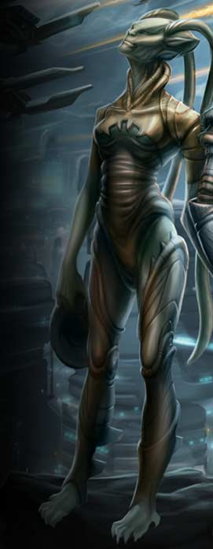
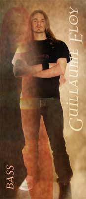

|
 |
Né le 26 juin 1975 à Ris Orangis J’ai vécu 30 ans sous le noms de Paula et j’ai fait carrière dans le plaisir rémunéré au sein du plus grand bordel de Rio. Suite à une banale histoire de trafic d’organes j’ai dù précipitamment quitter le Brésil et me faire opérer ; c’est comme ça que je suis devenu Guillaume et que je me suis mis à la basse. Ce sont ces quatre héros des temps modernes que sont Laurent, Alex, Stéphane et Arnaud qui m’ont recueilli(e) : je crois que c’est ma maîtrise du kamasutra qui les a séduit. Ils m’ont d’abord initié à la culture française par Richard Gotainer, Sim, Patrick Topalof et Daniel Guichard ; ce n’est que plus tard que j’ai découvert ceux qui allaient devenir mes groupes de prédilection : Black Sabbath, Saint Vitus, Witchfinder General, Judas Priest, Quiet Riot ainsi que des choses plus énergiques comme Obituary, Cancer et Bolt Thrower. Mes instruments de plaisir sont : une BC Rich mockingbird, une Yamaha Rbx 5 cordes, une Fender precision et une Takamine eg 512 (electro acoustique). _________________ birth : June, the 26th 1975, Ris Orangis I lived about 30 years being named Paula in the biggest Rio's brothel. After a banal trafic of bodies story, I left Brazil and had an operation. that's how I became Guillaume and I learned bass. Four heroes of our time, Lars, Alex, Steph and Arnaud took care about me. I think it's thanks to my great kama sutra control. They first learned me french culture, with Richard Gotainer, Sim, Patrick Topalof and Daniel Guichard. I discovered after the ones who are now my favorite bands : Black Sabbath, Saint Vitus, Witchfinder General, Judas Priest, Quiet Riot and more heavy stuff like Obituary, Cancer and Bolt Thrower.
Son ancien groupe - His ancient band : |
 |